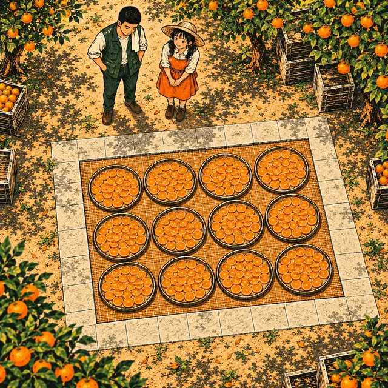
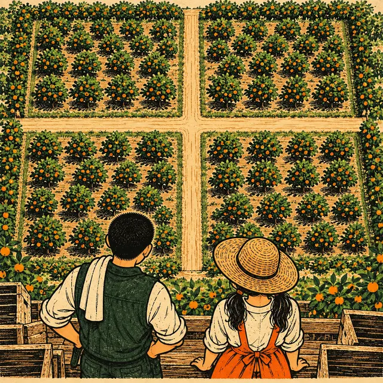
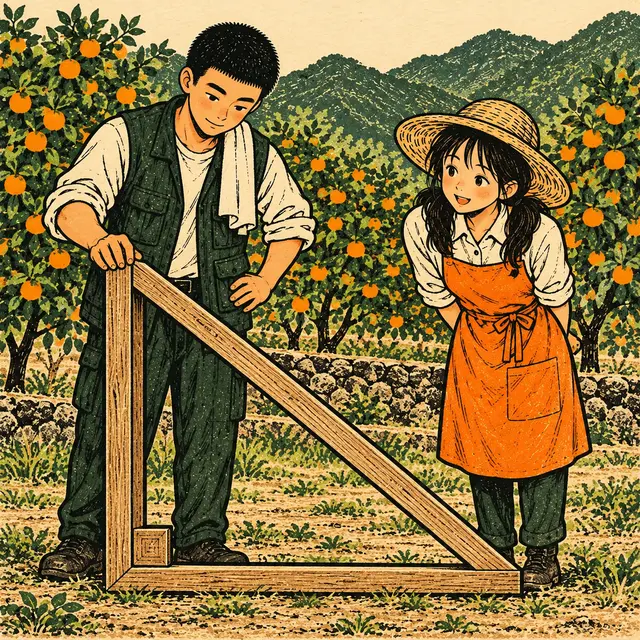

課前暖身漫畫：阿圃到底幾歲？
小柚問阿圃幾歲，阿圃神秘一笑：「把我今年的年齡乘上 \(6\) 年前的年齡，剛好是 \(160\)。」小柚設阿圃今年 \(x\) 歲，列出 \(x(x - 6) = 160\)，解出來竟然有兩個答案：\(16\) 和 \(-10\)——阿圃笑著說：負 10 歲？那時候我還沒出生呢！
重點 1：解應用問題的四個步驟——設、列、解、驗
重點整理與敘述
- 1. 設未知數：依題意假設適當的未知數，通常設「題目問的量」或「最好表示其他量」的那一個。
- 2. 列方程式：找出題目裡「相等」的關係，寫成一元二次方程式。
- 3. 解方程式：用因式分解、配方法或公式解。
- 4. 檢查並寫答案：每個解都要回到情境檢查是否合理，把不合理的解捨去再寫答案。
- 例：今年的年齡乘上 \(10\) 年前的年齡等於 \(39\)。設今年 \(x\) 歲： \[\begin{aligned} & x(x - 10) = 39 \\ & x^2 - 10x - 39 = 0 \\ & (x - 13)(x + 3) = 0 \end{aligned}\] 得 \(x = 13\) 或 \(x = -3\)。年齡不可能是負數，\(x = -3\) 不合，所以今年 \(13\) 歲。
- 方程式有兩個根，不代表題目有兩個答案：\(x = -3\) 代回方程式也成立，它是被「情境」淘汰的。
若求出的解都不合情境，則此題無解。
視覺互動探索：年齡謎題四步驟
謎題是「今年的年齡 × \(d\) 年前的年齡 ＝ 幸運數字」。拉動今年的年齡 \(n\) 與相隔的年數 \(d\)，再按「下一步」走完四個步驟——注意第 3 步一定解出兩個數，第 4 步要捨去哪一個？
形成性評量 (四個步驟)
Q1. 小柚今年 \(x\) 歲，她「\(4\) 年後的年齡」與「\(4\) 年前的年齡」相乘是 \(240\)。小柚今年幾歲？
解析：答案為 B。\(4\) 年後是 \(x + 4\) 歲、\(4\) 年前是 \(x - 4\) 歲：
\[\begin{aligned} & (x + 4)(x - 4) = 240 \\ & x^2 - 16 = 240 \\ & x^2 = 256 \end{aligned}\]
得 \(x = 16\) 或 \(x = -16\)；年齡不能是負數，所以小柚今年 \(16\) 歲。
A 錯：\(12\) 是她 \(4\) 年前的年齡。
C 錯：\(20\) 是她 \(4\) 年後的年齡。
D 錯：解出 \(x = -16\) 之後沒有做第 4 步檢查，負數年齡要捨去。
Q2. 阿圃今年的年齡與他 \(6\) 年後的年齡相乘，恰好是爺爺今年年齡的 \(6\) 倍。爺爺今年 \(72\) 歲，阿圃今年幾歲？
解析：答案為 D。設阿圃今年 \(x\) 歲：
\[\begin{aligned} & x(x + 6) = 6 \times 72 \\ & x^2 + 6x - 432 = 0 \\ & (x - 18)(x + 24) = 0 \end{aligned}\]
得 \(x = 18\) 或 \(x = -24\)（不合），所以阿圃今年 \(18\) 歲。
A 錯：把「\(6\) 年後」看成「\(6\) 年前」，列成 \(x(x - 6) = 432\)，得 \(24\)。
B 錯：漏了「\(6\) 倍」，列成 \(x(x + 6) = 72\)，得 \(6\)。
C 錯：沒有捨去負數年齡 \(-24\)。
重點 2：數字問題——和是 \(S\)，另一數就寫成 \(S - x\)
重點整理與敘述
- 已知兩數的和：設其中一數為 \(x\)，另一數就是「和 \(- x\)」，再用「積」列方程式。
- 例：兩人號碼的和為 \(25\)、積為 \(154\)，小翊的號碼比較大。設小翊的號碼為 \(x\)： \[\begin{aligned} & x(25 - x) = 154 \\ & x^2 - 25x + 154 = 0 \\ & (x - 14)(x - 11) = 0 \end{aligned}\] 得 \(x = 14\) 或 \(x = 11\)。小翊的比較大，\(x = 11\) 不合，所以小翊是 \(14\)。
- 兩個根剛好就是兩個數：設 \(x\) 是哪一個，列出的方程式都一樣；題目指定「誰比較大」，才決定留下哪一個根。
- 連續的數：連續整數設 \(x\)、\(x + 1\)；連續偶數（或奇數）設 \(x\)、\(x + 2\)、\(x + 4\)。
- 也可以列舉：課本的一題多解，三個連續偶數平方和為 \(596\)，從 \(2, 4, 6\) 開始列，列到 \(12^2 + 14^2 + 16^2 = 596\) 就找到了。數字大時列舉很慢，方程式比較快。
視覺互動探索：抽號碼遊戲
拉動兩人的號碼，畫面只告訴你兩數的和與積。切換「列方程式」與「列舉法」：兩種方法找到的是不是同一組？第 4 步為什麼要捨去一個根？
形成性評量 (數字問題)
Q3. 兩個正整數的和是 \(47\)、積是 \(540\)，其中較大的數是多少？
解析：答案為 A。設較大的數為 \(x\)，另一數為 \(47 - x\)：
\[\begin{aligned} & x(47 - x) = 540 \\ & x^2 - 47x + 540 = 0 \\ & (x - 20)(x - 27) = 0 \end{aligned}\]
兩個根 \(20\)、\(27\) 就是這兩個數，較大的是 \(27\)。
B 錯：\(20\) 是較小的數。
C 錯：\(23.5\) 只是和的一半，\(23.5 \times 23.5 \ne 540\)。
D 錯：題目只問較大的數，兩個根不能都當答案。
Q4. 三個連續正偶數的平方和是 \(200\)，其中最大的數是多少？
解析：答案為 C。設三數為 \(x\)、\(x + 2\)、\(x + 4\)：
\[\begin{aligned} & x^2 + (x + 2)^2 + (x + 4)^2 \\ &\qquad = 200 \\ & 3x^2 + 12x - 180 = 0 \\ & x^2 + 4x - 60 = 0 \\ & (x - 6)(x + 10) = 0 \end{aligned}\]
\(x = -10\) 不是正偶數，不合；\(x = 6\)，三數是 \(6, 8, 10\)，最大的是 \(10\)。
A 錯：\(6\) 是最小的數，題目問最大的。
B 錯：\(8\) 是中間的數。
D 錯：沒有捨去 \(x = -10\)；\(-10, -8, -6\) 的平方和雖然也是 \(200\)，但不是正偶數。
重點 3：解出 \(x\) 之後——題目問的不一定是 \(x\)
重點整理與敘述
- 設的 \(x\) 是為了好列式，題目問的可能是 \(x + 4\)、\(x^2\)、\(30 + x\) 這類由 \(x\) 算出來的量。
- 例：小鈺的生日是 \(x\) 號，再過 \(4\) 天是隔宿露營，兩個日期相乘為 \(165\)： \[\begin{aligned} & x(x + 4) = 165 \\ & (x - 11)(x + 15) = 0 \end{aligned}\] \(x = 11\)（\(-15\) 不合）。題目問露營日，答案是 \(x + 4 = 15\) 號，不是 \(11\) 號。
- 例：盒數與每盒雞蛋的顆數一樣多，設每盒 \(x\) 顆、共 \(x\) 盒，買進的雞蛋就是 \(x^2\) 顆。解出 \(x\) 之後還要再算 \(x^2\)。
- 寫答案前回頭讀一次題目：問的是哪一個量、單位是什麼。
視覺互動探索：雞蛋分裝台
盒數和每盒的顆數一樣多，賣掉幾盒後剩下一些蛋。拉動每盒顆數 \(n\) 與賣掉的盒數 \(k\)，再切換「題目問什麼」：同一個 \(x\)，答案為什麼不一樣？
形成性評量 (所求不一定是 x)
Q5. 果園把一批柑橘分裝成禮盒，每盒的顆數相同，而且盒數比每盒的顆數多 \(2\)。賣掉 \(3\) 盒後，還剩 \(132\) 顆。這批柑橘一共有幾顆？
解析：答案為 D。設每盒 \(x\) 顆，共 \(x + 2\) 盒；賣掉 \(3\) 盒後剩 \(x - 1\) 盒：
\[\begin{aligned} & x(x - 1) = 132 \\ & x^2 - x - 132 = 0 \\ & (x - 12)(x + 11) = 0 \end{aligned}\]
\(x = 12\)（\(-11\) 不合）。一共有 \(x(x + 2) = 12 \times 14 = 168\) 顆。
A 錯：\(12\) 只是每盒的顆數。
B 錯：\(132\) 是賣掉之後剩下的顆數。
C 錯：把盒數也當成 \(12\)，算成 \(12^2\)；盒數其實是 \(12 + 2 = 14\)。
Q6. 小柚的生日是 \(9\) 月 \(x\) 號，再過 \(4\) 天就是果園的開放日。兩個日期的號數相乘是 \(252\)，果園開放日是 \(9\) 月幾號？
解析：答案為 B。
\[\begin{aligned} & x(x + 4) = 252 \\ & x^2 + 4x - 252 = 0 \\ & (x - 14)(x + 18) = 0 \end{aligned}\]
日期是正整數，\(x = -18\) 不合，生日是 \(14\) 號；開放日是 \(x + 4 = 18\) 號。
A 錯：\(14\) 號是生日，題目問的是開放日。
C 錯：把「再過 \(4\) 天」看成「\(4\) 天前」，列成 \(x(x - 4) = 252\) 得 \(x = 18\)，再加 \(4\) 就錯上加錯。
D 錯：負的那個解要捨去，答案只有一個。
重點 4：價格問題——單價 × 數量 ＝ 總價
重點整理與敘述
- 列式依據：單價 \(\times\) 數量 \(=\) 總價（收入）。
- 兩個因子都用 \(x\) 表示：題目說「數量是單價的 \(2\) 倍少 \(20\)」，設單價 \(x\) 元，數量就是 \((2x - 20)\) 個。
- 例：鬆餅收入 \(1750\) 元： \[\begin{aligned} & x(2x - 20) = 1750 \\ & x^2 - 10x - 875 = 0 \\ & (x - 35)(x + 25) = 0 \end{aligned}\] 價格不能是負數，\(x = -25\) 不合，鬆餅每個 \(35\) 元。
- 付錢找零：付 \(600\) 元、找回 \(45\) 元，真正花掉的是 \(600 - 45 = 555\) 元，等號右邊寫這個數。
- 價格、數量都要是正數；數量通常還要是整數。
視覺互動探索：收入就是長方形的面積
數量是單價的 \(m\) 倍少 \(k\)。拉動單價 \(p\)、\(m\)、\(k\)，看收入怎麼變成「單價 × 數量」這個長方形的面積；切到「付錢找零」，等號右邊要先算什麼？
形成性評量 (價格問題)
Q7. 果醬攤每罐果醬的單價比當天賣出的罐數多 \(15\) 元，當天收入 \(2700\) 元。每罐果醬賣多少元？
解析：答案為 C。設單價 \(x\) 元，罐數是 \(x - 15\)：
\[\begin{aligned} & x(x - 15) = 2700 \\ & x^2 - 15x - 2700 = 0 \\ & (x - 60)(x + 45) = 0 \end{aligned}\]
價格不能是負數，所以每罐 \(60\) 元（賣出 \(45\) 罐）。
A 錯：\(45\) 是賣出的罐數，不是單價。
B 錯：負的價格要捨去。
D 錯：把 \(60\) 當成罐數，再加 \(15\)；其實 \(60\) 就是單價。
Q8. 阿圃到資材行買噴水壺，買的個數比每個的單價少 \(9\)。他付了 \(2000\) 元，找回 \(380\) 元。阿圃買了幾個噴水壺？
解析：答案為 A。真正花掉 \(2000 - 380 = 1620\) 元。設單價 \(x\) 元，個數是 \(x - 9\)：
\[\begin{aligned} & x(x - 9) = 1620 \\ & x^2 - 9x - 1620 = 0 \\ & (x - 45)(x + 36) = 0 \end{aligned}\]
單價 \(45\) 元（\(-36\) 不合），買了 \(45 - 9 = 36\) 個。
B 錯：\(45\) 是單價，題目問的是個數。
C 錯：把個數算成比單價多 \(9\)。
D 錯：直接拿 \(2000\) 列式，\(x(x - 9) = 2000\) 解不出整數；要先扣掉找回的 \(380\) 元。
重點 5：面積問題——內部四周留邊，長、寬各少 \(2x\)
重點整理與敘述
- 沿內部四周留寬 \(x\) 的走道：左右兩邊都佔掉 \(x\)，長少 \(2x\)；上下兩邊也佔掉 \(x\)，寬少 \(2x\)。
- 例：長 \(22\) 公尺、寬 \(16\) 公尺的草地，四周留等寬的道路，剩下 \(216\) 平方公尺： \[\begin{aligned} & (22 - 2x)(16 - 2x) = 216 \\ & 4x^2 - 76x + 136 = 0 \\ & x^2 - 19x + 34 = 0 \\ & (x - 2)(x - 17) = 0 \end{aligned}\] \(x = 17\) 時寬 \(16 - 34\) 是負數，不合，道路寬 \(2\) 公尺。
- 課本例 3：地毯與四面牆都相距 \(1.5\) 公尺，地毯的長、寬就比客廳各少 \(3\) 公尺。
- 捨去的理由是「導出的長度」：大的那個根本身是正數，但代進去讓寬變成負數或 \(0\)。

視覺互動探索：曬果場的四周走道
拉動曬果場的長 \(L\)、寬 \(W\) 與走道寬 \(w\)，畫面算出剩下的曬果區面積，再反過來把走道寬當成未知數 \(x\) 解回去。大的那個根代進去，寬會變成多少？
形成性評量 (四周走道)
Q9. 一塊長 \(50\) 公尺、寬 \(30\) 公尺的長方形曬果場，沿著內部四周留一條等寬的走道，剩下的曬果區面積是 \(1056\) 平方公尺。走道寬幾公尺？
解析：答案為 B。設走道寬 \(x\) 公尺，曬果區長 \(50 - 2x\)、寬 \(30 - 2x\)：
\[\begin{aligned} & (50 - 2x)(30 - 2x) = 1056 \\ & 4x^2 - 160x + 444 = 0 \\ & x^2 - 40x + 111 = 0 \\ & (x - 3)(x - 37) = 0 \end{aligned}\]
\(x = 37\) 時寬 \(30 - 74\) 是負數，不合，走道寬 \(3\) 公尺。
A 錯：\(37\) 讓曬果區的寬變成負數。
C 錯：長、寬只扣了一次 \(x\)，列成 \((50 - x)(30 - x) = 1056\)，得 \(6\)；四周走道要扣兩次。
D 錯：\(37\) 不合情境，要捨去。
Q10. 一塊長方形果園的寬比長少 \(4\) 公尺，沿內部四周留出寬 \(2\) 公尺的步道，其餘種果樹。若果樹區的面積和步道的面積相等，果園的長、寬各是多少公尺？
解析：答案為 D。設果園長 \(x\)、寬 \(x - 4\)；果樹區長 \(x - 4\)、寬 \(x - 8\)。果樹區 \(=\) 步道 \(=\) 果園 \(-\) 果樹區：
\[\begin{aligned} & 2(x - 4)(x - 8) = x(x - 4) \\ & (x - 4)\left[2(x - 8) - x\right] = 0 \\ & (x - 4)(x - 16) = 0 \end{aligned}\]
\(x = 4\) 時果園寬是 \(0\)，不合；\(x = 16\)，果園長 \(16\)、寬 \(12\)。驗算：果樹區 \(12 \times 8 = 96\)，步道 \(192 - 96 = 96\)。
A 錯：\(12\) 與 \(8\) 是果樹區的長、寬。
B 錯：寬是 \(0\) 的果園不存在，\(x = 4\) 要捨去。
C 錯：誤當成「果樹區是步道的 \(2\) 倍」。
重點 6：十字走道——平移拼成一塊長方形
重點整理與敘述
- 把走道平移到邊上：直的走道推到最右邊、橫的推到最下面，四塊剩下的地剛好拼成一個長方形，長 \(L - x\)、寬 \(W - x\)。
- 例：長 \(30\) 公尺、寬 \(18\) 公尺的座位區，內部規畫等寬的十字走道，其餘 \(448\) 平方公尺： \[\begin{aligned} & (30 - x)(18 - x) = 448 \\ & x^2 - 48x + 92 = 0 \\ & (x - 2)(x - 46) = 0 \end{aligned}\] \(x = 46\) 比寬還大，不合，走道寬 \(2\) 公尺。
- 直接算走道面積：直的 \(Wx\)＋橫的 \(Lx\)，中間交叉的小正方形被算了兩次，要減掉一次 \(x^2\)。
| 走道 | 剩下的面積 |
|---|---|
| 內部四周 | \((L - 2x)(W - 2x)\) |
| 十字 | \((L - x)(W - x)\) |

視覺互動探索：把走道推到邊上
拉動長 \(L\)、寬 \(W\) 與走道寬 \(w\)。先看「原位置」：中間紅色那塊被直的、橫的走道各算一次；再切到「平移後」，四塊果樹區拼成哪個長方形？
形成性評量 (十字走道)
Q11. 長 \(40\) 公尺、寬 \(25\) 公尺的長方形果園，內部開闢兩條互相垂直、等寬且與邊平行的十字步道，其餘種果樹的面積是 \(814\) 平方公尺。步道寬幾公尺？
解析：答案為 A。把步道平移到邊上，果樹區拼成長 \(40 - x\)、寬 \(25 - x\)：
\[\begin{aligned} & (40 - x)(25 - x) = 814 \\ & x^2 - 65x + 186 = 0 \\ & (x - 3)(x - 62) = 0 \end{aligned}\]
\(62\) 比寬 \(25\) 還大，不合，步道寬 \(3\) 公尺。
B 錯：步道不可能比果園還寬。
C 錯：當成四周走道扣了兩次，列成 \((40 - 2x)(25 - 2x) = 814\)；十字走道只扣一次。
D 錯：\(62\) 不合情境，要捨去。
Q12. 一塊長 \(35\) 公尺、寬 \(22\) 公尺的長方形空地，內部開闢一條等寬、與邊平行的十字走道，走道寬 \(x\) 公尺，走道的總面積是 \(110\) 平方公尺。下列哪一個方程式正確？
解析：答案為 C。橫的走道 \(35x\)、直的走道 \(22x\)，中間交叉的小正方形 \(x^2\) 被算了兩次，要減掉一次。解 \(x^2 - 57x + 110 = 0\)，即 \((x - 2)(x - 55) = 0\)，\(55\) 不合，走道寬 \(2\) 公尺。
A 錯：交叉的那一塊重複算了。
B 錯：\((35 - x)(22 - x)\) 是剩下的空地面積，不是走道面積。
D 錯：重疊的部分要減掉，不是加上。
重點 7：幾何關係列式——畢氏定理
重點整理與敘述
- 列式依據換成幾何關係：直角三角形「斜邊² ＝ 兩股的平方和」。
- 先判斷哪一邊是斜邊：斜邊是最長的那一邊（加得最多的那一邊）。
- 例：正三角形的一邊加 \(3\) 公分、一邊加 \(2\) 公分、第三邊減 \(5\) 公分後，形成直角三角形。設原邊長 \(x\)： \[\begin{aligned} & (x + 3)^2 = (x + 2)^2 + (x - 5)^2 \\ & x^2 - 12x + 20 = 0 \\ & (x - 2)(x - 10) = 0 \end{aligned}\] \(x = 2\) 時第三邊 \(x - 5 = -3\)，不合，原邊長 \(10\) 公分。
- 捨去的理由是「導出的邊長」：\(x = 2\) 本身是正數，但用它算出來的某一邊是負數或 \(0\)，圍不成三角形。

視覺互動探索：三邊都用 x 表示
兩股是 \(x + p\)、\(x + q\)，斜邊是 \(x + r\)。拉動 \(p\)、\(q\)、\(r\)，用畢氏定理列方程式，再把每個根代回三邊檢查。找找看：什麼時候兩個根都不合？
形成性評量 (畢氏定理)
Q13. 把一個正三角形的一邊加長 \(1\) 公分、一邊不變、第三邊剪短 \(17\) 公分後，恰好圍成一個直角三角形。原正三角形的邊長是幾公分？
解析：答案為 C。設原邊長 \(x\)，加長的那一邊 \(x + 1\) 最長，是斜邊：
\[\begin{aligned} & (x + 1)^2 = x^2 + (x - 17)^2 \\ & x^2 - 36x + 288 = 0 \\ & (x - 12)(x - 24) = 0 \end{aligned}\]
\(x = 12\) 時剪短的那一邊 \(12 - 17 = -5\)，不合；\(x = 24\)，三邊是 \(25, 24, 7\)。
A 錯：\(12\) 讓第三邊變成負數。
B 錯：\(12\) 不合情境，要捨去。
D 錯：\(25\) 是加長後的斜邊，題目問原來的邊長。
Q14. 一個直角三角形的兩股相差 \(31\) 公分，斜邊長 \(41\) 公分。這個直角三角形的面積是多少平方公分？
解析：答案為 B。設短股 \(x\)，長股 \(x + 31\)：
\[\begin{aligned} & x^2 + (x + 31)^2 = 41^2 \\ & 2x^2 + 62x - 720 = 0 \\ & x^2 + 31x - 360 = 0 \\ & (x - 9)(x + 40) = 0 \end{aligned}\]
邊長不能是負數，\(x = 9\)，兩股 \(9\) 與 \(40\)，面積 \(9 \times 40 \div 2 = 180\)。
A 錯：兩股相乘之後忘了除以 \(2\)。
C 錯：拿斜邊 \(41\) 和長股 \(40\) 算面積；斜邊不是高。
D 錯：拿斜邊 \(41\) 和短股 \(9\) 算面積。
重點 8：收費問題——每多一人，每人便宜
重點整理與敘述
- 設「多出來的數量」為 \(x\)：人數 \((N + x)\)、每人費用 \((P - dx)\)，兩個因子都含 \(x\)，相乘等於總收入。
- 例：預定 \(30\) 人、每人 \(5000\) 元，每增加 \(1\) 人每人便宜 \(100\) 元，總收入 \(160000\) 元。每人費用 \(5000 - 100x = 100(50 - x)\)，列式後兩邊同除以 \(100\)： \[\begin{aligned} & (30 + x)(50 - x) = 1600 \\ & x^2 - 20x + 100 = 0 \\ & (x - 10)^2 = 0 \end{aligned}\] \(x = 10\)（重根），參加人數是 \(30 + 10 = 40\) 人。
- 答案要換回題目問的量：解出的是「增加的人數」，題目問的是「參加人數」。
- 兩個根可能都合理：兩種人數都得到相同收入，兩個都要寫；但若題目有上限（例如「最多可買 \(15\) 張」），超出上限的要捨去。
- 這類題目展開時數字大，記得先同除以公因數再解。
視覺互動探索：採果團的收入
原訂 \(N\) 人、每人 \(P\) 元，每多 \(1\) 人每人便宜 \(d\) 元。用「目標：多幾人」決定目標收入，再把它當成未知數解回去：另一個根合不合理？調整「最多再加幾人」看看上限怎麼淘汰答案。
形成性評量 (收費問題)
Q15. 果園的採果團原訂 \(24\) 人、每人收費 \(500\) 元；人數超過 \(24\) 人時，每多 \(1\) 人，每人的費用就便宜 \(10\) 元。全團最多 \(40\) 人。若總收入是 \(13200\) 元，共有多少人參加？
解析：答案為 D。設多了 \(x\) 人：
\[\begin{aligned} & (24 + x)(500 - 10x) = 13200 \\ & x^2 - 26x + 120 = 0 \\ & (x - 6)(x - 20) = 0 \end{aligned}\]
\(x = 6\) 時 \(30\) 人；\(x = 20\) 時 \(44\) 人，超過上限 \(40\) 人，不合。所以共 \(30\) 人。
A 錯：\(6\) 是多出來的人數，題目問參加人數。
B 錯：\(44\) 人超過全團上限。
C 錯：沒有用「最多 \(40\) 人」檢查。
Q16. 果醬一罐 \(120\) 元時可賣出 \(60\) 罐；售價每提高 \(10\) 元，就少賣 \(3\) 罐。若希望收入是 \(7560\) 元，而且讓賣出的罐數多一點，每罐應該訂多少元？
解析：答案為 A。設提高 \(x\) 次（每次 \(10\) 元）：
\[\begin{aligned} & (120 + 10x)(60 - 3x) = 7560 \\ & x^2 - 8x + 12 = 0 \\ & (x - 2)(x - 6) = 0 \end{aligned}\]
\(x = 2\)：售價 \(140\) 元、賣 \(54\) 罐；\(x = 6\)：售價 \(180\) 元、賣 \(42\) 罐。兩種收入都是 \(7560\) 元，要罐數多一點，選 \(140\) 元。
B 錯：\(180\) 元只賣 \(42\) 罐，罐數比較少。
C 錯：解出 \(x = 2\) 是提高 \(2\) 次，要乘 \(10\)，不是加 \(2\) 元。
D 錯：題目多給了「罐數多一點」的條件，只能留一個。
重點 9：解都不合情境——此題無解
重點整理與敘述
- 方程式有解，不代表題目有解：解出來的數若都不符合情境，就說此題無解——表示題目描述的情形不可能發生。
- 例：吊飾的價格是購買數量的 \(2\) 倍，多買 \(5\) 個、每個便宜 \(3\) 元，共 \(330\) 元： \[\begin{aligned} & (x + 5)(2x - 3) = 330 \\ & 2x^2 + 7x - 345 = 0 \\ & (2x - 23)(x + 15) = 0 \end{aligned}\] \(x = \frac{23}{2}\) 或 \(x = -15\)，個數必須是正整數，兩個都不合，此題無解。
| 情境 | 解必須是 |
|---|---|
| 個數、人數、盒數 | 正整數 |
| 長度、時間、價格 | 正數（可以不是整數） |
| 有上限的數量 | 不超過上限 |
- 別把「不是整數」一律當成不合：長度可以是 \(2 + \sqrt{3}\) 這種無理數，只要是正數就合理。
視覺互動探索：禮盒分得出來嗎？
盒數比每盒的顆數多 \(a\)，賣掉 \(k\) 盒後剩 \(R\) 顆。拉動三個數，看解落在數線的哪裡：正根剛好落在綠色的正整數上，才分得出來；落在兩個綠點之間，就是此題無解。
形成性評量 (解與情境的合理性)
Q17. 香包的單價是小柚購買個數的 \(3\) 倍。店員說：「再多買 \(4\) 個，每個就便宜 \(5\) 元，一共 \(400\) 元。」小柚原本要買幾個香包？
解析：答案為 C。設原本買 \(x\) 個，單價 \(3x\) 元：
\[\begin{aligned} & (x + 4)(3x - 5) = 400 \\ & 3x^2 + 7x - 420 = 0 \end{aligned}\]
判別式 \(7^2 - 4 \times 3 \times (-420) = 5089\) 不是完全平方數（\(71^2 = 5041\)、\(72^2 = 5184\)），兩個解 \(\frac{-7 \pm \sqrt{5089}}{6}\) 一個約 \(10.72\)、一個是負數，都不是正整數，此題無解。
A 錯：代回去 \(15 \times 28 = 420\)，不是 \(400\)。
B 錯：個數必須是整數，不能四捨五入成答案。
D 錯：代回去 \(14 \times 25 = 350\)，不是 \(400\)。
Q18. 阿圃把一塊正方形木板的一邊加長 \(4\) 公分、另一邊鋸短 \(6\) 公分，得到的長方形面積恰好是原正方形的一半。原正方形的邊長是幾公分？
解析：答案為 B。設原邊長 \(x\)：
\[\begin{aligned} & (x + 4)(x - 6) = \frac{1}{2}x^2 \\ & 2x^2 - 4x - 48 = x^2 \\ & x^2 - 4x - 48 = 0 \end{aligned}\]
公式解：
\[\begin{aligned} x & = \frac{4 \pm \sqrt{208}}{2} \\ & = 2 \pm 2\sqrt{13} \end{aligned}\]
\(2 - 2\sqrt{13}\) 是負數，不合；\(2 + 2\sqrt{13} \approx 9.21\)，鋸短後 \(x - 6 \approx 3.21\) 仍是正數，合理。
A 錯：長度可以是無理數，只要是正數就合理。
C 錯：負的那個解要捨去。
D 錯：公式解只把 \(\sqrt{208}\) 除以 \(2\)，前面的 \(4\) 沒有除。
重點 10：判別式小於 \(0\)——不必解就知道做不到
重點整理與敘述
- 先算判別式：列出 \(ax^2 + bx + c = 0\) 後，若 \(b^2 - 4ac \lt 0\)，方程式無解，題目描述的情形就不可能發生，此題無解。
- 例：兩種理想體重算法「身高 × 身高 × \(22\)」與「\((100 \times\) 身高 \(- 80) \times 0.7\)」算出相同結果，設身高 \(x\) 公尺： \[\begin{aligned} & 22x^2 = 0.7(100x - 80) \\ & 22x^2 = 70x - 56 \\ & 11x^2 - 35x + 28 = 0 \end{aligned}\] 判別式 \[\begin{aligned} & (-35)^2 - 4 \times 11 \times 28 \\ & = 1225 - 1232 = -7 \lt 0 \end{aligned}\] 所以無解。
- 收入問題的意義：漲價會少賣，收入有一個最高點；目標收入超過最高點，判別式就是負數。
- 判別式 \(\ge 0\) 也還沒結束：有解之後，仍要照第 4 步檢查是不是整數、在不在範圍內。
\(b^2 - 4ac \ge 0\) → 解出來，再檢查合理性
視覺互動探索：收入目標達得到嗎？
果醬每罐 \(p\) 元可賣 \(n\) 罐，每漲 \(10\) 元少賣 \(1\) 罐。拉動目標收入 \(T\)：目標線一高過所有長條，判別式就變成負數——不必解就知道達不到。
形成性評量 (判別式)
Q19. 阿圃用兩種方法估算一箱柑橘的重量（公斤），\(x\) 是箱子的邊長（公寸）：方法①是 \(2x^2\)，方法②是 \(5x - 4\)。若兩種方法算出的重量相同，\(x\) 是多少？
解析：答案為 A。
\[\begin{aligned} & 2x^2 = 5x - 4 \\ & 2x^2 - 5x + 4 = 0 \end{aligned}\]
判別式
\[\begin{aligned} & (-5)^2 - 4 \times 2 \times 4 \\ & = 25 - 32 = -7 \lt 0 \end{aligned}\]
方程式無解，兩種方法不可能算出相同的重量。
B 錯：判別式是 \(-7\)，不是 \(7\)，負數不能開平方。
C 錯：常數項是 \(+4\)，\(-4ac = -32\)，不是 \(+32\)。
D 錯：判別式等於 \(0\) 才是重根。
Q20. 果園的柑橘禮盒一盒 \(300\) 元時可賣出 \(40\) 盒；售價每提高 \(20\) 元，就少賣 \(1\) 盒。下列哪一個收入目標是不可能達到的？
解析：答案為 D。設提高 \(y\) 次，收入是 \((300 + 20y)(40 - y)\)。目標 \(16000\) 元時：
\[\begin{aligned} & (300 + 20y)(40 - y) = 16000 \\ & 20y^2 - 500y + 4000 = 0 \\ & y^2 - 25y + 200 = 0 \end{aligned}\]
判別式 \(625 - 800 = -175 \lt 0\)，達不到。
A 錯：\(y = 0\)（不漲價）就是 \(300 \times 40 = 12000\) 元。
B 錯：\(y^2 - 25y + 100 = 0\)，\(y = 5\) 時 \(400 \times 35 = 14000\) 元。
C 錯：\(y^2 - 25y + 150 = 0\)，\(y = 10\) 時 \(500 \times 30 = 15000\) 元。
小節總結與核心回顧
應用問題速查表
- 四個步驟：設未知數、列方程式、解方程式、檢查並寫答案。
- 數字問題：和是 \(S\)，另一數寫 \(S - x\)；兩個根就是兩個數。
- 寫答案前：回頭讀題目問的是 \(x\)、\(x + 4\) 還是 \(x^2\)。
- 價格：單價 × 數量 ＝ 總價；付錢找零先算實付。
- 面積：四周走道長寬各少 \(2x\)；十字走道平移後各少 \(x\)。
- 幾何：畢氏定理列式，每一邊都要是正數。
- 收費：\((N + x)(P - dx) =\) 總收入；兩根都合理就都寫，超出上限的捨去。
- 無解：解都不合情境，或判別式小於 \(0\)。
回到果園：阿圃幾歲？
四個步驟走一遍
設阿圃今年 \(x\) 歲，列出 \(x(x - 6) = 160\)，整理成 \(x^2 - 6x - 160 = 0\)，分解得 \((x - 16)(x + 10) = 0\)。\(x = -10\) 代回去也成立，可是負數年齡不合情境，所以阿圃今年 \(16\) 歲。
方程式只管數字，情境才管合不合理
方程式不知道 \(x\) 代表年齡、價格還是邊長，它只負責找出所有讓等號成立的數。第 4 步的檢查，是把數學的答案翻回生活的答案。
下一章預告
第 4 章到這裡結束。下一章進入統計：把一堆資料整理成次數分配表與統計圖，看出資料的分布。